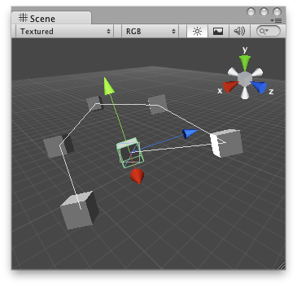

Handles.DrawPolyLine
public static void DrawPolyLine(params Vector3[] points);
Description 描述
Draw a line going through the list of points.
Note: Use HandleUtility.GetHandleSize where you might want to have constant screen-sized handles.

PolyLine that connects all the objects in the Scene View.
// Draw lines between selected GameObjects.
using UnityEditor; using UnityEngine; using System.Collections;
[CustomEditor(typeof(DrawPolyLineExample))] public class PolyLineDraw : Editor { private Vector3[] positions;
void OnSceneGUI() { DrawPolyLineExample connectedObjects = target as DrawPolyLineExample; if (connectedObjects.objs == null) { return; }
if (connectedObjects.objs.Length > 0) { positions = new Vector3[connectedObjects.objs.Length]; }
for (var i = 0; i < connectedObjects.objs.Length; i++) { if (connectedObjects.objs[i]) { positions[i] = connectedObjects.objs[i].transform.position; } else { positions[i] = Vector3.zero; } }
Handles.DrawPolyLine(positions); } }
And the script attached to this handle:
using UnityEngine;
public class DrawPolyLineExample : MonoBehaviour { public GameObject[] objs; }